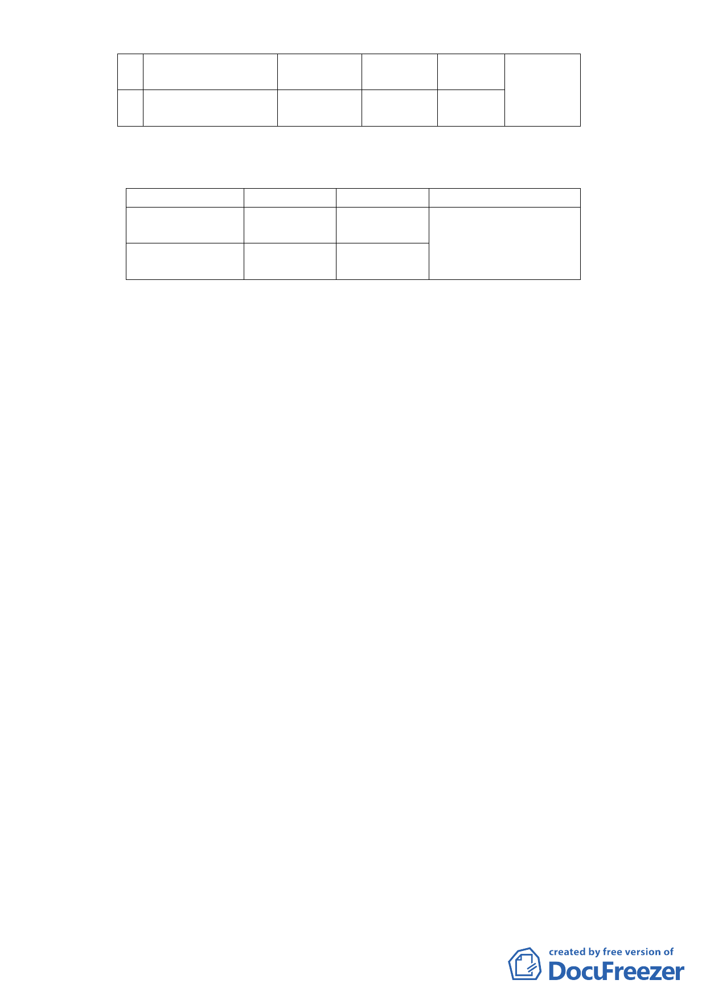

三小段582、669 及
669-1地號
5 臺北市文山區木柵段 市場用地
三小段670 地號
宅區(特)
第三種住
宅區(特)
3,135
（二）土地使用分區管制
1.使用強度
使用分區
原計畫
第一種商業區（特）
建蔽率
容積率
45%
225%
第三種住宅區（特）
建蔽率
容積率
45%
225%
新計畫
建蔽率 50%
容積率 450%
建蔽率 50%
容積率 450%
變更理由
配合公營住宅政策，提
高土地利用效能，增加
公營住宅供給，調整建
蔽率與容積率。
2.使用管制
（1）本計畫案內第三種住宅區（特）比照臺北市土地使用
分區管制自治條例第三種住宅區規定辦理。
（2）本計畫案內第一種商業區（特）比照臺北市土地使用
分區管制自治條例第一種商業區規定辦理。惟第1 及第
2 層樓應作商業使用。
（3）本計畫區之建築基地得放寬高度限制，但其建築物各
部分高度不得超過自該部分起量至面前道路中心線水
平距離之五倍。
（4）本案不適用臺北市建築物增設室內公用停車空間獎
勵、都市更新及其他容積獎勵。
（5）為增加公營住宅開發彈性與效益，本計畫區內建築基
地之容積得互為調派運用。
（6）本計畫區開發時應考量地區停車需求，設置適當數量
之停車空間並開放部分作為公共使用。
3.都市設計管制
本計畫案內未來之開發建築須經「臺北市都市設計
及土地使用開發許可審議委員會」審議通過後始得核
發建造執照。
五、 事業及財務計畫
- 17 -